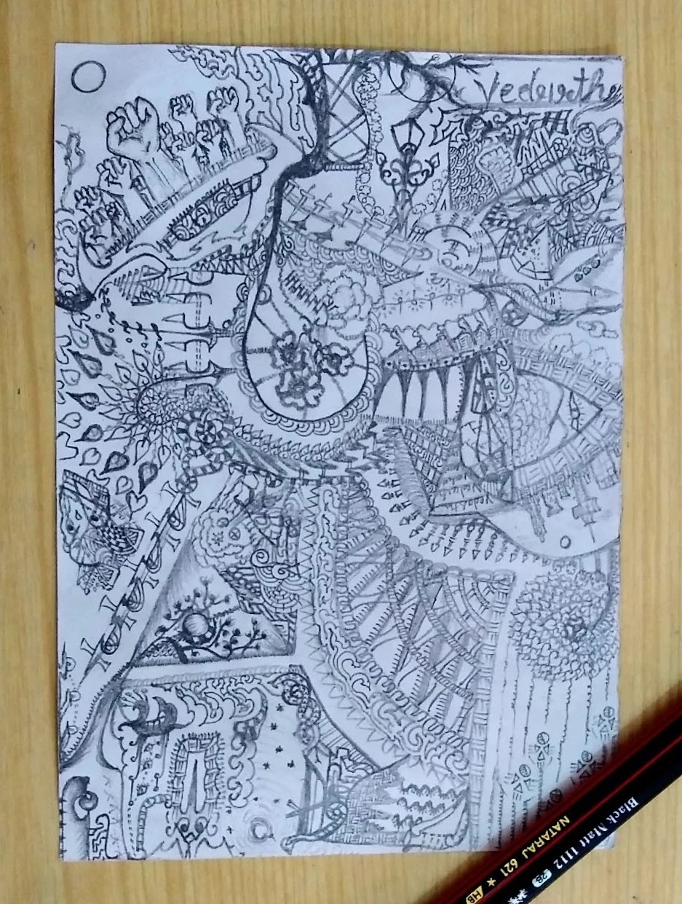
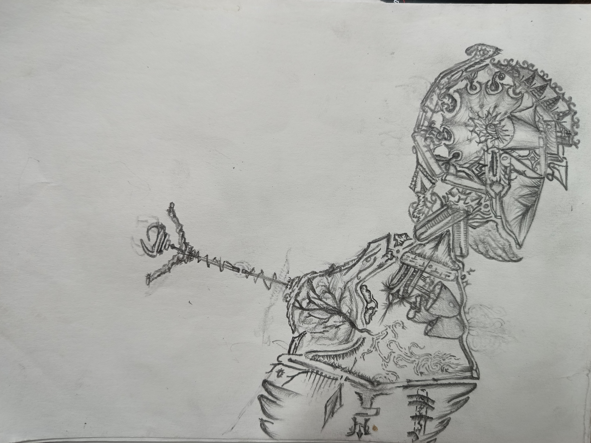

I was wondering what should I put in devlogs since I have already coded most of the core mechenics, and well forcing myself to write isn’t how I wanna do this, so I put hold to this whole website making phase and continued my devlopment.
I was to design and work on implementing Journal in a room and also a letterbox outside what I call Crimson Mansion and there I created these walls for room and trees so the letter box doesn’t feel so lonely.
This reminded me that I wanted to write how I create reasonably good art based on my skill level well this particular way to create stuff for my game or say my art style for this game is what I call
Substraction
- Substraction of art is still art - Great Vedarth 2025
I like to keep this quote bounded to paper when I talk to people cause substraction of world would still be art and I have reasons annihilating bit of earth and earthly beings has caused people to create art write stuff and rebel in creative ways as far as I see is Substractin of any matter has always been the spark.
If there is one thing I can confidently say that I am good at drawing are Designs say I have born telont for that I expanded that from free hand to 0Sense but looks cool mechinary. and I still draw that kinda stuff all the time.
The reason being I like to capture the moment the place and mood I am in and pour that in whatever the fuck I am drawing 100% of time none of it makes sense but it looks cool.

pardon mi tendency to show Natraj Pencilia and 2B hehe but
I am talking about captureing my thoughts, if you can see top left in first image fists showing rebel but something under that which looks like a lock ment the rebel is constarined to that place only. well ofcourse only I would remember and understand that but thats my reason drawing it and plus I wanna do art which I can do forever.

so now that you know why I draw none of these drawings present substraction art (hah) but this is the place I got inspired from if you observe the way curves are drawn they are ment for mehendi design.
All the art you see in these are utilization of space and ink (IK carbon in this case NERD) if you learned about Caligraphy in School u should know even simple ovel curves seprated by space would still look cool beacuse it utilizes ink and space equally with bit of humaness and creativity of how and where they are put there are whole styles of line art and such, a good example would be how
GREAT ART INSTAGRAM LINK
OR JUST SEE THE REEL I AM TALKING ABOUT
uses lines for background.
same thing goes for any Mehendi design fill the hands with gaps and mehendi.
Thus, knowing my pixel art skills, erasing things has always been easier for me. and well I thought maybe I could use that a bit here and there it was initially for a tilemap I was creating (Which I don’t have any image of rn cause I lost it in some E Drive cause UBUNTU DOESN’t HAVE A FKN FILE SYSTEM THATS 100% COMPATIBLE WITH WINDOWS) and there I first noticed how greatly we can use that
I think the best example to understand this is (if you zoom in) are the second images they are walls and stairs in my game if you observe the texture on them its just made by using refining two colors and their shaps,